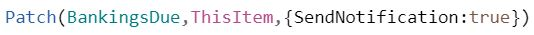
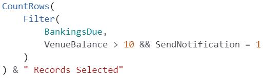
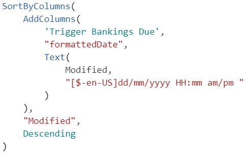
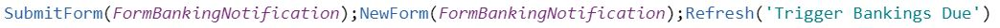

Work Project
Introduction
I have been tasked with designing and creating various modules to carry out business processes required by my employer. The modules will use the Microsoft applications, Sharepoint as their data source, Power automate to provide workflow automation, and Powerapps as the user interface if required. A timeline of my work on these projects is included in the weekly breakdown on the home page. The modules documented here are:
Overview
Create an application that will enable staff to send notifications to key venue personnel notifying them of banking figures.
Background
Venues generate GMP (gaming machine profit) and a weekly return amount is calculated each Monday. Venues have 5 days to bank the weekly return amount. The finance department produce a text file twice a week from the accounting system. The Monday file contains the banking figure generated from the previous week’s activity. The Friday file contains the current arrears for the venues. This arrears needs to be banked on the Friday to stay within the 5 days period. The notifications required are:
- Monday - Email
- Monday - SMS
- Friday - Email
- Friday - SMS
Data
The data required for the module comes from two sources. The Key Persons Sharepoint list, and the txt file produced by the finance department, which is uploaded to the Bankings Due Sharepoint list. Figure 1 shows sample data from the upload file.
Figure 1. Banking due txt file
Each key person can opt in for both Monday and Friday notifications via email and/ or SMS. Figure 2 shows a sample of abbreviated data (notification preferences only) from the key persons list. Each full key person record has 32 properties.
Figure
2. Key persons list showing notification preferences.
Data upload
There are two options for uploading the banking data from the text file to Sharepoint:
- Data can be copied and pasted into a Sharepoint list by entering “quick edit” mode. Place the cursor in the first empty column and paste.
- A Powershell script can upload the data to the list.

The Powershell script was the preferred method as it meant users didn’t have to interact with the Sharepoint list itself. To enable each user (there are four possible users) to be able to run the script the Powershell PNP Sharepoint Online cmdlets needed to be installed on each machine. The install instructions and documentation for this is here. I used a bat file placed in a shared drive for users to run the script.
powershell.exe -ExecutionPolicy Bypass -file BankingsToSharePointList.ps1
With the data uploaded to Sharepoint the next step was to create the flows that will send the notifications.
Power Automate
Power automate offers 3 ways to make a flow; automated, instant, and scheduled. For this project I used an automated flow that would trigger based on an event. There are a large number of triggers to choose from. I searched the Sharepoint triggers and used “When an item is created” since I wanted the flow to run when an item is created in the bankings due list. Once a trigger is defined the rest of the flow carries out a set of chosen actions. Like triggers there are many actions to choose from such as:
- data maintenance (create, update, delete items)
- process control (conditional statements, loops, switches
- data operations (variables, table creation)
- app integration (mail, excel, Onedrive, SMS providers)
Notification Logic
The chart shows the basic process involved. When an item is created in the BankingsDue list the flow is triggered. Data from the BankingsDue and Key Persons lists are retrieved. The process loops through the records looking for a match on venue number in the BankingsDue and KeyPersons lists. An additional condition is evaluated to check if the key person has opted in to receive the notification. If the condition is evaluated as true, an email is populated with dynamic content, the venue's banking figure, and sent to the key person email address.
Creating the first flow in Power Automate
First run reflection
The flow worked however it ran 50 times, once for each item that was added to the Bankings Due list. Depending on what Microsoft subscription you have there can be limits on the number of flows you can run. I decided the current model was not very scalable and could cause issues in the future when additional flows were added. I decided to create a new Sharepoint list that would be the trigger. The process now was to upload the banking items as usual, then trigger a flow that would run just once and evaluate all 50 items on the bankings due list. The new trigger list contained a simple reference field as well as a staff name. By showing this information in the user interface staff could see a history of notifications including the date and time they were executed. This would provide certainty to staff as to whether another user had already run the flow, and prevent it from being run twice.
SMS Notifications
I began using the Nexmo and Telesign connectors available through Power Automate. I created accounts and ran tests. I had issues sending SMS messages to Vodafone numbers. They were reported as being successfully sent but weren’t being received. Further to that there was a lack of functionality available from these connectors. Our current legacy system uses a NZ based provider. Here we create a CSV file containing all required information. The CSV is emailed to the provider for distribution. Their system offers 2 way communication where a dialogue between us and the operator can occur and be documented. SMS replies are sent to the email address that was used to send the SMS. I decided to try and emulate this functionality with Power Automate. This proved a challenge due to limitations in Power Automate. The “create CSV table” action would only except input from one source. Because I needed fields coming from both the Bankings Due and Key Persons lists a workaround was required. I added a new Sharepoint list and used the “create item” action which can include multiple sources. This enabled me to create the CSV with the output from the newly created list.
SMS flow creating CSV table

Making the process efficient
Efficiencies can be made by creating views in a Sharepoint list that limit the number of columns returned. The Key Persons list is a good example of this as there are 32 columns, but I created a view that contained only relevant columns to the notifications process. Further efficiencies can be made by filtering the data being passed into the flows at the beginning rather than using conditional statements operating on larger data sets. Power Automate offers OData filter queries to restrict the amount of data that is evaluated. I used this filtering to bring in only the required data.
There are some gotchas when working with different applications as some have differing conditional logic syntax. The table below shows a Boolean field example.
| Application | True value | False value |
|---|---|---|
| Sharepoint list | Yes | No |
| Power Automate | True | False |
| OData Filter | 1 | 0 |
Refining the process
As the banking notifications were a twice weekly event containing new and different data each time, consideration needed to be given to data maintenance of the Sharepoint list that feeds the notifications. To acomplish this I created a scheduled flow in Power Automate to purge the list of all entries. This flow would run the day before the Notification send date. The SMS process needed additional consideration given to data management. For this process I added additional actions to the flow itself that would delete both the list items that populated the CSV file, and the CSV file itself before creating the new list items and file. I also personalised the notification messages to venue operators by adding the staff user name entered from the initial trigger.
User Interface
The user interface was built in the Power Apps studio. Here you can choose your initial layout such as tablet or phone. Following that, apps are created by adding screens which can have various elements. These elements are linked to data sources and provide the front end functionality to allow data maintenance and the processing of workflows.
The Banking notifications is a single screen app using the following elements:
-
Gallery: Its data source is the Bankings Due Sharepoint list. The users asked for a way to opt out of sending notifications so I added a checkbox that is linked to a newly created "send Notification" column in the Bankings Due list. The checkbox works by using the oncheck/offcheck properties to call the patch function which updates the sharepoint list item in real time to either true or false. The flows logic will only send notifications if the send notification field is set to true.

A count feature was also added to show the number of currently selected records.

-
Table: Its data source is the trigger list. It is used to display notifications history to the users. The challenge was displaying the modified date in the desired format. For this I used the AddColumns function to create a virtual column for the sort, and passed it the modified date column from the list.

-
Form: The form is the trigger for the notification process. Its data source is the trigger list with the form mode set to new, so that it is ready for new input. The type column is a choice column of either Monday/ Friday. The user name is a person field linked to the organisation's Active directory. The send notifications button submits the form which added a new item to the trigger list and starts the flow.

close panel
Overview
Create a flow using Power Automate that will send notifications to staff a set intervals.
Background
Venues enter into an agreement with the Trust for a set time period. Notifications to our venue reps are required to inform the rep of how much time is left until the agreement expires. The notifications are to be sent at the following intervals:
- 6 months
- 3 months
- 1 month
- 2 weeks
- 1 week
- 1 day
Data
Data will come from a Sharepoint document library that holds venue agreements for each venue in PDF format. Each file is tagged with metadata to enable workflows to run on them and produce useful information about the files to users. The columns of interest for this notification are the ExpiryDate and venueNumber. Due to the data hierarchy, data will also be needed from the Sharepoint lists venueData (venueNumber, GMVNumber), and GMVData (GMVNumber, Rep). Lookups on these lists will need to be performed to obtain the venue rep details for the notifications.
Calculated fields
I added additional metadata to the library in order to perform the calculations required to show the number of days to run on an agreement. I added
a column with a now() function to get the current date, and a daysToRun column which subtracted the expiry date from the current date. =IF(AgreementStatus="Active",ROUND((ExpiryDate-TodaysDate),0))
This didn't work as the now() function provided the current date at the time of creation, but didn't dynamically update each day.
The fix was to create a flow that would run each day and update the column.